Program Studi Statistika
Mencetak Data Analyst & Data Scientist Berdaya Saing Global
Program Studi Statistika
Mencetak Data Analyst & Data Scientist Berdaya Saing Global
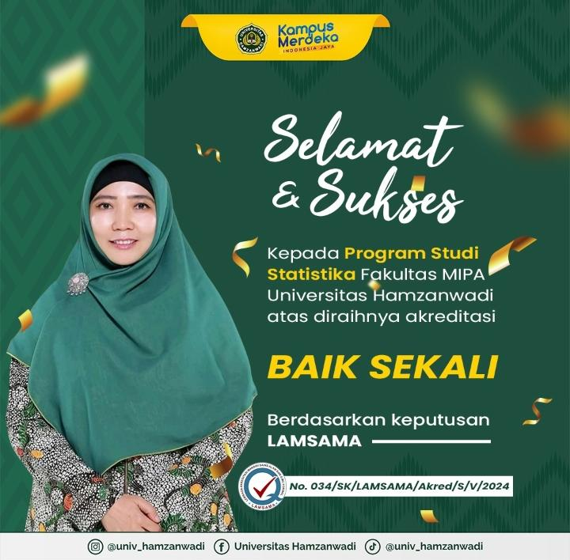
VISI DAN MISI
Pada tahun 2041 menjadi program studi statistika yang berdaya saing global berbasis budaya santri dalam menghasilkan lulusan data analyst dan data scientist yang profesional, berintegritas, inovatif, serta mampu memberikan kontribusi nyata bagi kemajuan ilmu pengetahuan dan pembangunan masyarakat.
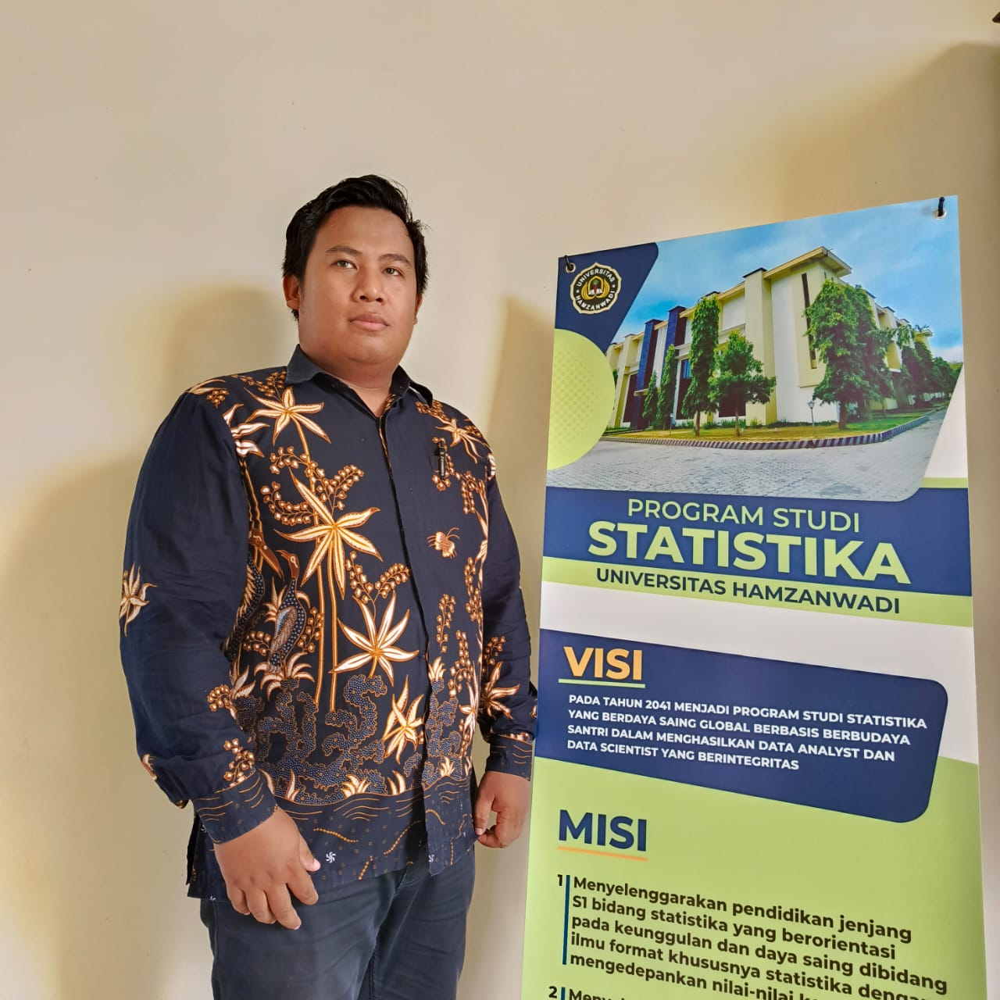
SEJARAH & IDENTITAS
Berdiri sebagai wujud komitmen Universitas Hamzanwadi dalam menjawab tantangan era revolusi industri dan transformasi digital. Program studi ini memadukan keilmuan analisis data modern dengan nilai-nilai luhur pesantren untuk membentuk karakter akademisi yang unggul dan berakhlak mulia.
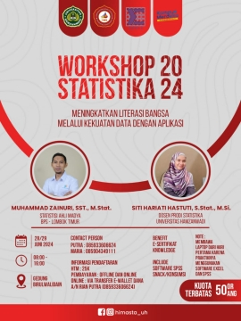
PROSPEK KARIER LULUSAN
Lulusan dibekali kompetensi mendalam di bidang pemodelan statistika, machine learning, dan komputasi data sehingga siap berkarier sebagai Data Scientist, Data Analyst, Aktuaris, Peneliti Kebijakan Publik, maupun Konsultan Riset di berbagai sektor industri nasional maupun multinasional.
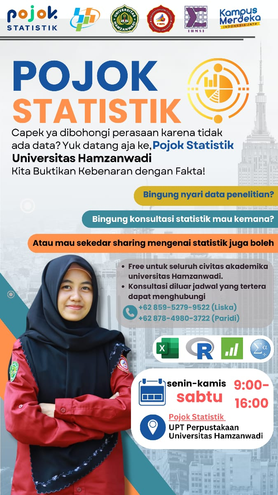
POJOK STATISTIK
Layanan kolaborasi antara kampus dan Badan Pusat Statistik (BPS) yang berfungsi sebagai pusat literasi data, konsultasi metodologi penelitian, serta ruang diskusi terbuka bagi sivitas akademika dan masyarakat umum untuk memanfaatkan data resmi negara secara tepat guna.
.jpg)
KURIKULUM MERDEKA BELAJAR
Kurikulum dirancang adaptif berbasis Outcome-Based Education (OBE) yang mengintegrasikan teori probabilitas, komputasi R dan Python, serta program magang industri agar mahasiswa memiliki pengalaman praktik langsung dalam memecahkan persoalan berbasis data riil.
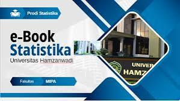
PERPUSTAKAAN DIGITAL & E-BOOK
Akses penuh terhadap ribuan referensi e-book statistika terapan, modul praktikum komputasi, jurnal ilmiah terindeks, serta perangkat lunak analisis data berlisensi yang mendukung kelancaran proses perkuliahan dan penyusunan tugas akhir mahasiswa.
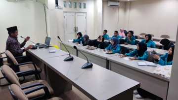
PELATIHAN AGEN STATISTIK
Program pembinaan intensif untuk mencetak mahasiswa terpilih sebagai duta literasi statistik kampus yang bertugas mendampingi pengolahan data survei, memberikan edukasi metodologi riset, serta menyosialisasikan pentingnya pengambilan keputusan berbasis data.
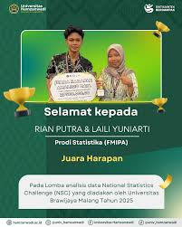
KULIAH UMUM BIG DATA & AI
Program Studi Statistika sukses menyelenggarakan kuliah umum bertema pemanfaatan kecerdasan buatan dan Big Data dalam perencanaan pembangunan daerah yang menghadirkan pakar praktisi industri teknologi serta peneliti senior sebagai pembicara utama.
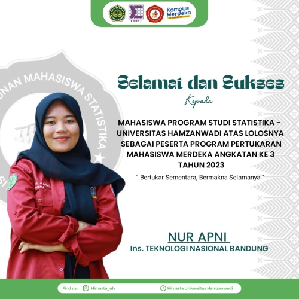
KUNJUNGAN STUDI KE BPS PROVINSI
Mahasiswa semester akhir melaksanakan kunjungan lapangan ke kantor Badan Pusat Statistik untuk mempelajari secara langsung alur sensus nasional, validasi data lapangan, hingga proses publikasi indikator ekonomi dan sosial masyarakat secara akurat.
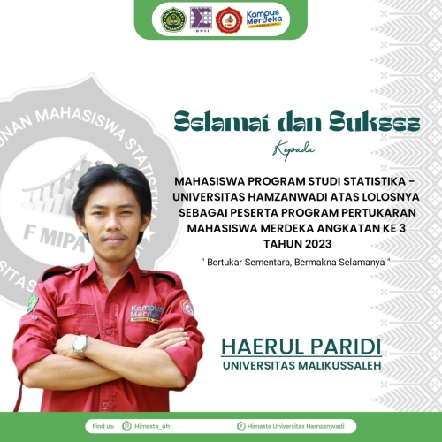
PENANDATANGANAN MOU RISET TERAPAN
Memperluas jejaring kemitraan strategis bersama instansi pemerintah daerah dan lembaga survei independen guna mendukung program penelitian kolaboratif, pendampingan desa cinta statistik, serta penyediaan lokasi magang bersertifikat bagi mahasiswa.
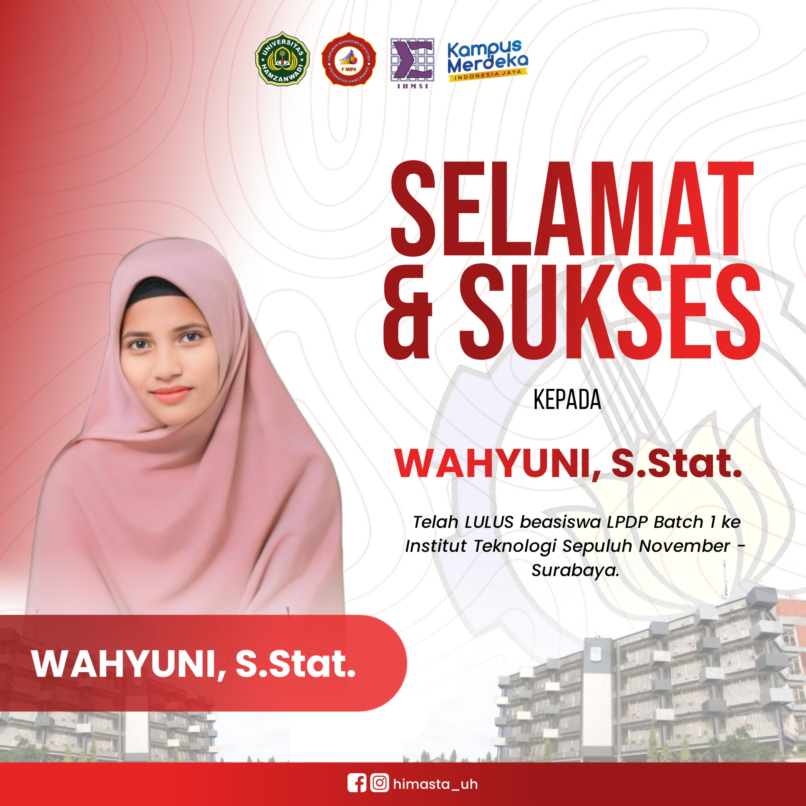
JUARA LOMBA INFOGRAFIS NASIONAL
Tim mahasiswa statistika berhasil meraih penghargaan bergengsi pada kompetisi visualisasi data dan infografis tingkat nasional melalui karya analisis ketahanan pangan dan kemiskinan ekstrem yang disajikan secara interaktif dan informatif.
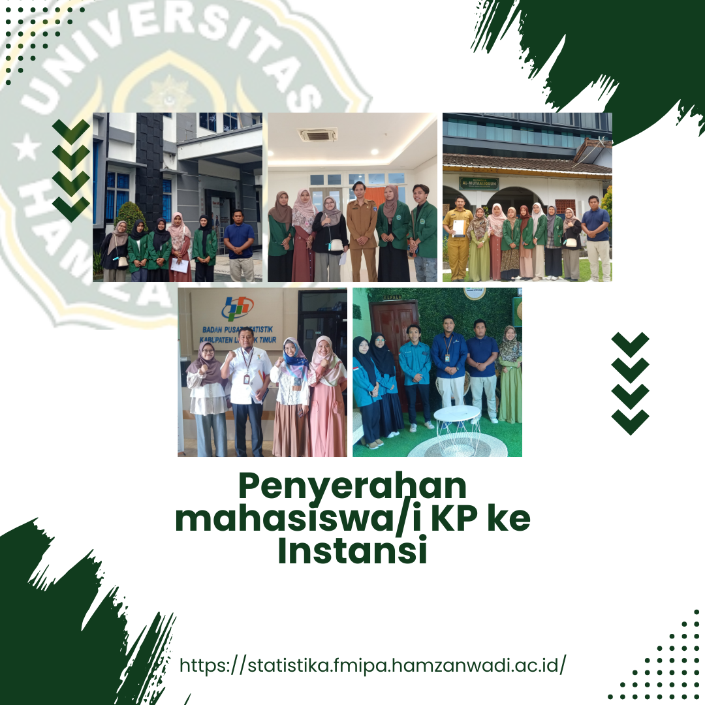
PROGRAM DESA CANTIK BINAAN
Implementasi Tri Dharma Perguruan Tinggi melalui pendampingan perangkat desa dalam membangun sistem pendataan profil kependudukan dan potensi UMKM berbasis digital agar perencanaan anggaran desa menjadi lebih tepat sasaran dan transparan.
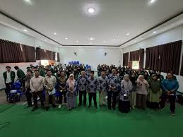
DOSEN & TENAGA KEPENDIDIKAN
Didukung oleh jajaran dosen berkualifikasi magister dan doktor lulusan perguruan tinggi ternama dengan kepakaran di bidang statistika matematika, ekonometrika, biostatistika, komputasi, serta sains data yang aktif mempublikasikan riset di jurnal bereputasi nasional maupun internasional dan siap membimbing mahasiswa secara intensif.
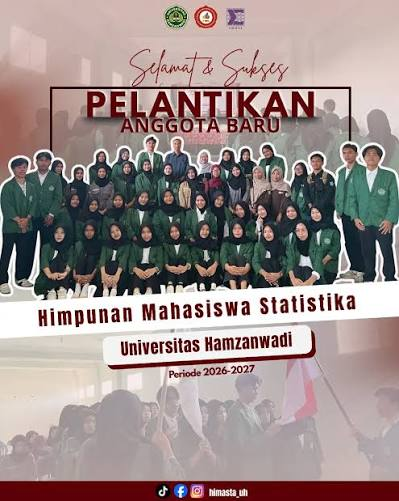
HIMPUNAN MAHASISWA STATISTIKA
Wadah organisasi kemahasiswaan yang aktif mengasah jiwa kepemimpinan, kerja sama tim, dan kreativitas melalui berbagai program kerja intelektual, pengabdian sosial, pelatihan perangkat lunak analisis data, serta kegiatan pengembangan minat dan bakat.
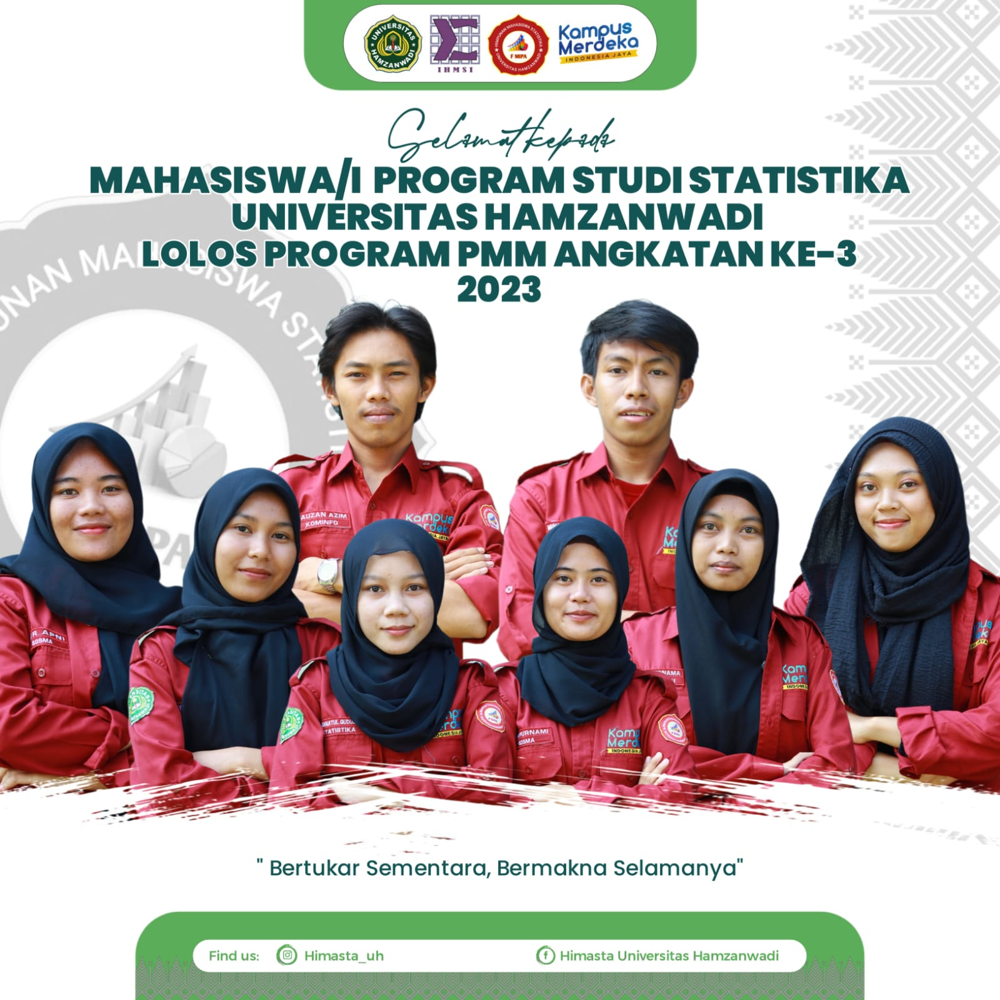
KOMUNITAS BELAJAR DATA SCIENCE
Kelompok studi mahasiswa yang rutin mengadakan sesi bedah kasus pemrograman R, Python, SQL, dan machine learning setiap pekan sebagai persiapan menghadapi berbagai kompetisi sains data nasional maupun sertifikasi keahlian profesi.
KLINIK KONSULTASI OLAH DATA
Inisiatif pendampingan sebaya oleh mahasiswa tingkat akhir dan asisten laboratorium untuk membantu rekan mahasiswa lintas fakultas dalam memahami pemilihan uji hipotesis, perancangan kuesioner, hingga interpretasi hasil output perangkat lunak statistik.
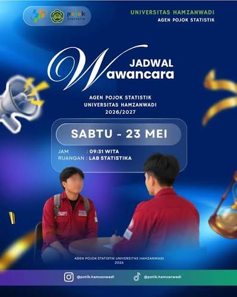
SEMINAR NASIONAL STATISTIKA
Forum ilmiah tahunan yang mempertemukan akademisi, peneliti, praktisi industri, dan mahasiswa dari seluruh Indonesia untuk mempresentasikan hasil penelitian terbaru seputar pemodelan stokastik, data mining, dan inovasi metode survei.
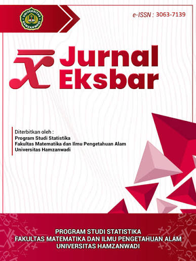
BOOTCAMP PEMROGRAMAN R & PYTHON
Pelatihan intensif selama tiga hari yang membahas teknik pembersihan data (data wrangling), eksplorasi visualisasi modern, hingga pembangunan model prediksi berbasis machine learning untuk menyelesaikan studi kasus bisnis dan pemerintahan.
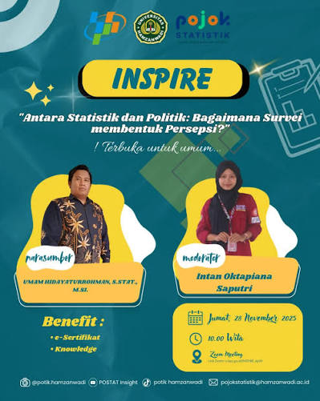
KOMPETISI INFOGRAFIS & ANALISIS DATA
Ajang kompetisi tingkat pelajar dan mahasiswa se-Nusa Tenggara untuk menguji ketajaman analisis kuantitatif serta kemampuan bercerita menggunakan data (data storytelling) dalam merumuskan solusi isu pembangunan berkelanjutan.
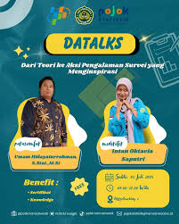
WORKSHOP PENULISAN ARTIKEL ILMIAH
Bimbingan teknis penulisan karya ilmiah terstandar SINTA dan Scopus bagi mahasiswa tingkat akhir agar hasil penelitian skripsi dapat dipublikasikan secara luas pada jurnal ilmiah bereputasi sebelum kelulusan.
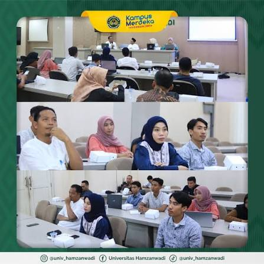
AKTIVITAS LABORATORIUM KOMPUTASI
Dokumentasi suasana pembelajaran interaktif di laboratorium komputer statistika saat mahasiswa mempraktikkan simulasi Monte Carlo, analisis deret waktu (time series), dan pemodelan regresi spasial menggunakan perangkat lunak terkini.
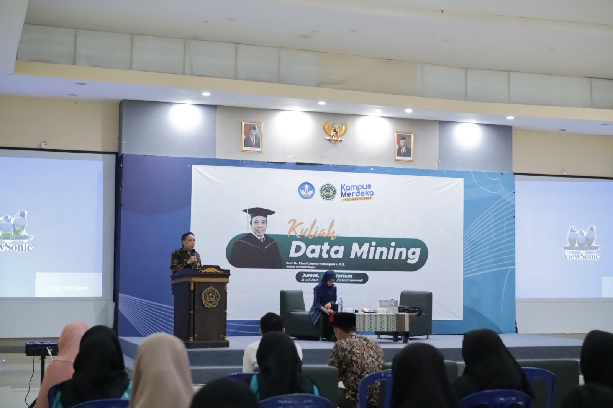
MOMEN YUDISIUM & PELEPASAN WISUDAWAN
Potret kebanggaan prosesi pengukuhan lulusan sarjana statistika yang siap mengabdikan ilmu analisis data di dunia kerja profesional dengan membawa semangat integritas, inovasi, dan nilai-nilai keislaman.
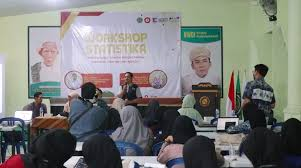
KEGIATAN BAKTI SOSIAL & LITERASI DATA
Kebersamaan dosen dan mahasiswa saat turun langsung ke sekolah-sekolah menengah serta komunitas masyarakat untuk memperkenalkan manfaat statistika dalam kehidupan sehari-hari melalui metode edukasi yang menyenangkan.
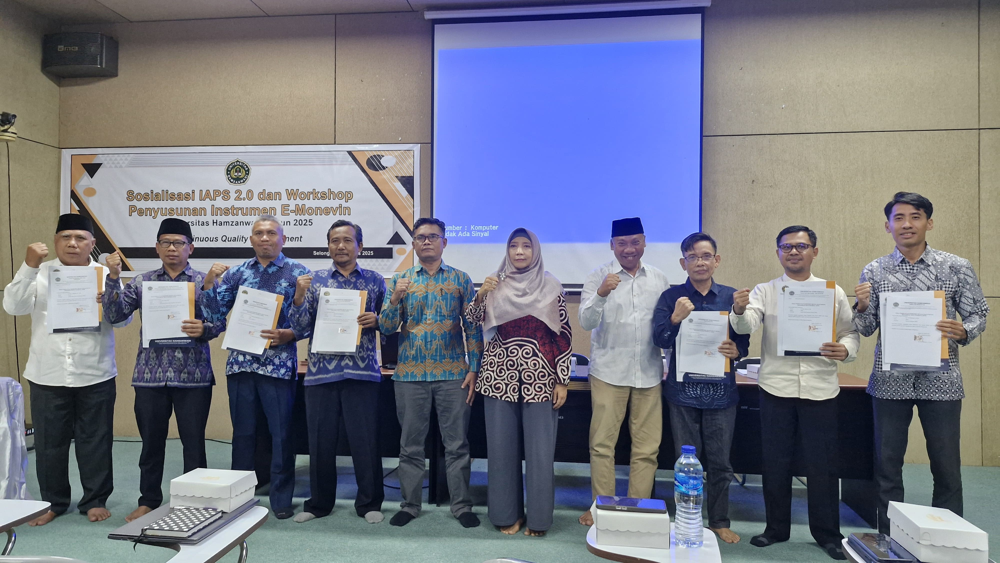
PENERIMAAN MAHASISWA BARU
Informasi lengkap mengenai jalur pendaftaran reguler, jalur prestasi akademik maupun non-akademik, jadwal seleksi masuk, serta berbagai pilihan program beasiswa KIP-Kuliah dan beasiswa yayasan bagi calon mahasiswa baru.
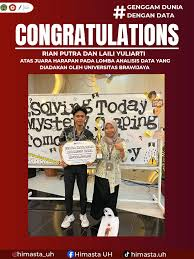
KALENDER & PANDUAN AKADEMIK
Pengumuman resmi terkait jadwal pengisian Kartu Rencana Studi (KRS), pelaksanaan Ujian Tengah Semester (UTS) dan Ujian Akhir Semester (UAS), pendaftaran seminar proposal, hingga jadwal sidang skripsi tahun akademik berjalan.
JURNAL EXBAR (PUBLIKASI ILMIAH)
Publikasi penelitian mengenai penerapan metode statistika non-parametrik Uji Mann-Whitney dalam membandingkan capaian prestasi akademik mahasiswa Program Studi Statistika Universitas Hamzanwadi antar angkatan sebagai bahan evaluasi mutu pembelajaran.
Unduh & Baca Selengkapnya di ResearchGateContact us for academic information, research collaboration, or data consultation
A108 Adam Street, New York, NY 535022
+1 5589 55488 55
info@example.com